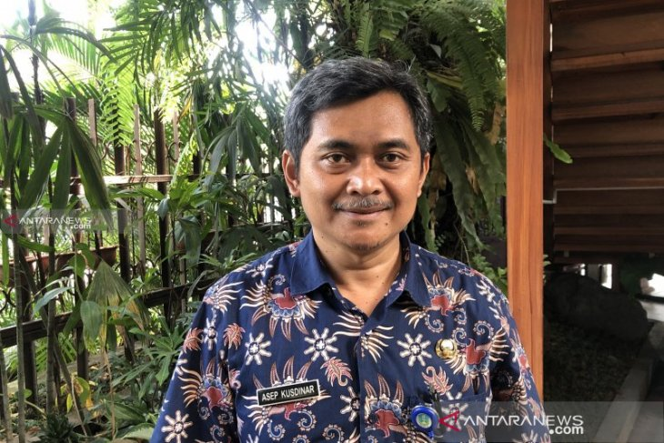

 Kepala Seksi Perencanaan, Pengembangan, dan Pemanfaatan UPT Taman Hutan Raya Raden Soerjo Dinas Kehutanan Provinsi Jawa Timur, Asep Kusdinar. ANTARA/Vicki Febrianto/aa
"Gunung Arjuno telah ditetapkan sebagai Cagar Biosfer oleh The United Nations Educational, Scientific, and Cultural Organization (UNESCO) pada 2015, bersama Gunung Bromo dan Gunung Semeru. Sehingga, kebersihan dan terpeliharanya ekosistem di Gunung Arjuno."
Malang, Jawa Timur (ANTARA) - Unit Pelaksana Teknis Taman Hutan Raya (Tahura) Raden Soerjo menerjunkan Tim Gerakan Sapu Bersih Sampah Berserakan (Saber), untuk membersihkan sampah yang ada di jalur pendakian Gunung Welirang dan Gunung Arjuno, Jawa Timur.
Kepala Seksi Perencanaan, Pengembangan, dan Pemanfaatan UPT Taman Hutan Raya Raden Soerjo, Asep Kusdinar, Kamis (27/6) mengatakan bahwa gerakan tersebut dilakukan akibat banyaknya timbunan sampah, terutama sampah plastik dari pendaki yang tidak bertanggung jawab.
"Kami melakukan Gerakan Saber di objek wisata alam Tahura dengan melibatkan berbagai pemangku kepentingan utamanya pemuda dan pelajar. Jangan sampai pendaki yang profesional itu buang sampah sembarangan, itu memalukan," kata Asep di Kota Malang, Jawa Timur.
Asep menjelaskan, upaya pembersihan sampah di jalur pendakian Gunung Welirang dan Gunung Arjuno tersebut dalam upaya untuk mengembalikan alam seperti sedia kala dan tidak ada sampah yang merusak ekosistem hutan.
Gerakan tersebut dilakukan oleh UPT Tahura Raden Soerjo dengan menggandeng masyarakat sekitar hutan, kalangan pelajar dan mahasiswa, pihak swasta, termasuk Badan Usaha Milik Negara.
"Sampah plastik itu tidak mudah diurai, ini menjadi masalah. Selain melakukan Gerakan Saber tersebut, kami juga melakukan upaya persuasif berupa imbauan kepada para pendaki di Gunung Welirang dan Gunung Arjuno," ujar Asep.
Langkah persuasif tersebut memberikan imbauan kepada para pendaki, untuk membawa kembali sampah yang ada atau yang ditemukan pada saat melakukan pendakian. Hal itu dilakukan guna meningkatkan kesadaran para pendaki untuk menjaga kelestarian alam.
Saat ini, pembatasan untuk membawa wadah plastik para pendaki yang akan melakukan pendakian ke Gunung Welirang dan Gunung Arjuno juga dilakukan. Para pendaki tersebut diimbau untuk bisa menggunakan wadah yang ramah lingkungan, atau tidak sekali pakai.
Sebagai catatan, Gunung Arjuno telah ditetapkan sebagai Cagar Biosfer oleh The United Nations Educational, Scientific, and Cultural Organization (UNESCO) pada 2015, bersama Gunung Bromo dan Gunung Semeru. Sehingga, kebersihan dan terpeliharanya ekosistem di Gunung Arjuno tersebut patut dijaga.
Dalam rencana ke depan, lanjut Asep, pihaknya akan memanfaatkan nilai ekonomi dari sampah yang mencemari kawasan Taman Hutan Raya tersebut. Keberadaan bank sampah akan menjadi salah satu solusi untuk memberikan nilai ekonomis dan berdaya guna.
"Sampah juga memiliki nilai ekonomi jika dikelola dengan baik. Kami berencana akan memilah sampah-sampah tersebut, dan memanfaatkan bank sampah yang ada," ujar Asep.
Dalam upaya meminimalisir sampah plastik pihaknya juga akan menggandeng pihak Universitas Brawijaya Malang untuk menerapkan teknologi pengelolaan sampah, termasuk mengurangi sampah plastik dengan material yang bisa digunakan ulang atau didaur ulang.
Selain itu juga akan dilakukan restorasi ekosistem di wilayah Tahura yang disesuaikan dengan karakteristik setempat. Restorasi tersebut meliputi jenis tumbuhan, iklim, dan jenis tanah yang ada di wilayah tersebut.